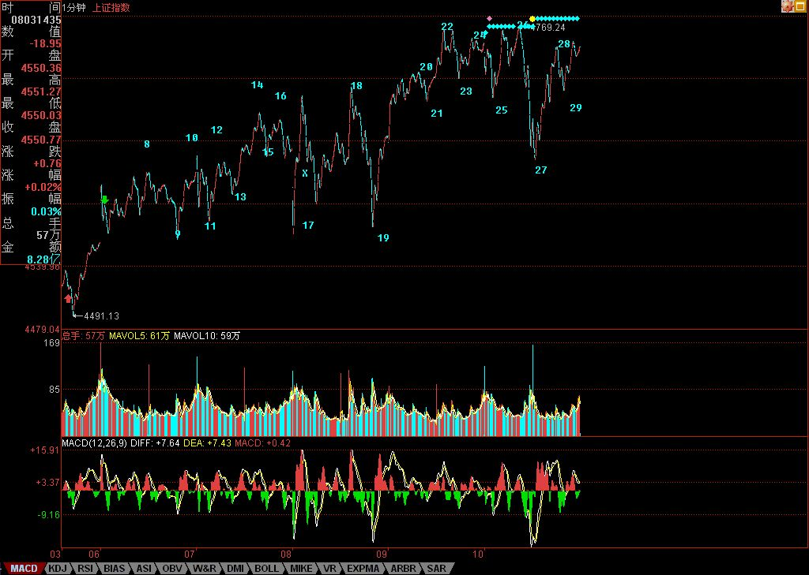

昨天已经给了第四拨人一个任务，就是顶住。可以这样说，在外围环境如此恶劣之下，这总算顶住了。当然，站在本ID不厚道的角度，会说他们姿势不够优美。周末消息面，就决定这拨人的短线命运。
技术上，今天5分钟的第三类买点并没有被制造出来，因此依然只能归于中枢震荡的范畴。下周一，能否制造此买点，将决定短线大盘的上攻力度与强度。当然，偷懒的、看不懂的，就继续5日线，这确实是懒人的懒招数。
个股方面，昨天在回答问题时说了，现在是从大盘50到300的热点蔓延，如果这蔓延能成功，那么大盘的热度还会增加，今天，这迹象已经开始。更重要的是，今天ST大面积启动，也表明短线的投机资金开始蠢动起来，因此，下周的热点蔓延能否成功，是决定行情延续时间的关键。
个股方面，中字头继续是本ID的主力。对那些不启动的中字头，轿夫都应该像777学习。本ID昨天那一通骂还是有点作用的，看看今天的中铝、中国国航，但国航确实恶心，跟着南航后面跑，那李总的军人作风成气了。算了，大周末的，就不想骂人了。其他股票，等大盘炒热后，会逐步补涨。
一到周末，本ID就对股票反胃。各位腐败去吧。
